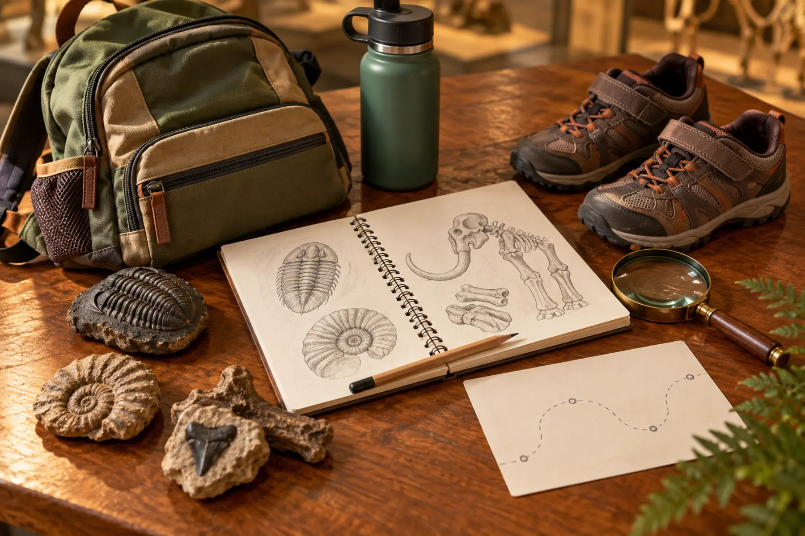

0–10 minutes
Use the restroom, photograph the official map for private reference and let each child choose one evidence job.
ITHACA · 90 MINUTES · AGES 6+ · INDOOR SCIENCE
Do not try to cover 4.5 billion years before lunch. Pick three anchors, give every kid one evidence job and leave while the fossil story still makes sense.

The Museum of the Earth in Ithaca is strongest when a family uses it as a focused natural-history mission, not a race through every label. Its anchors include the Hyde Park Mastodon, a 44-foot North Atlantic right whale skeleton, fossils, coral-reef interpretation and a long Earth-history mural. School-age kids can connect those objects to one question: what evidence lets scientists reconstruct life and environments that no person saw?
This plan chooses three anchor stops and one sketch. It is not a promise that every interactive, fossil activity, live animal or special exhibit is available. Use the official map and announcement bar on the morning of the visit. If a favorite feature is closed, the mastodon–whale–mural structure still works.
The museum offers online ticket purchase, but the official page does not say every ordinary visit requires advance booking. Check the current calendar and ticket screen rather than assuming. For two adults and two youth at the listed individual rate, admission is $40 before tax or add-ons; calculate the actual cart before committing. Members and eligible reciprocal-program visitors should verify the current benefit and bring the required card and ID.
From central Syracuse, the drive is commonly about 75–90 minutes depending on starting point, traffic and weather. That is an estimate, not a museum promise. The museum is at 1259 Trumansburg Road and the official page also identifies TCAT Route 14, stop 2547. Confirm the current route, parking and arrival instructions on the day.
The leaf pigment lab uses the same observed/inferred/unknown habit at home. The family museum-day system adds arrival, food and exit routines for larger venues.
The museum describes a Community Accessibility Program, quiet space, sensory-friendly programming and Mask Mondays. Dates and registration details vary, and the museum’s own pages currently show different Monday numbering in separate descriptions; use the event page or call rather than relying on a summary. Families who need a quieter or masked session should confirm the specific date, capacity, price and accommodations before travel.
The plan-your-visit page says pets are not allowed on the grounds or in buildings; service animals are welcome. Contact the museum about mobility routes, seating, elevators, restrooms, captioning, lighting or a personal-care need that determines the visit. “Accessible” is not one universal experience.
Eating and drinking are allowed only in designated indoor and outdoor areas. The museum lists outdoor tables in the Gorge Garden and near the entrance, plus indoor seating near visitor services. Do not assume a café or full lunch service. Eat before arrival or pack food that can remain closed until the designated area. Use the bathroom-stop plan on arrival; ask staff for the nearest appropriate facility rather than wandering with an urgent child.
Pack a bottle that seals, one pencil, a small notebook, a quiet layer and only the bag the family will actually carry. Do not bring collecting tools or treat displayed fossils as touchable unless signage specifically invites it. Photograph only where current rules permit and keep other visitors out of the frame.
Low-energy: mastodon, whale, sketch, out in 45 minutes. Sensory overload: use the quiet space or exit; do not force completion because admission was paid. Bad weather: the indoor museum remains viable, but the drive can still fail the family weather cutoff. Unexpected closure: do not improvise a second paid attraction under pressure; use the Cornell Botanic Gardens plan only if current weather and hours fit.
Skip for a child who needs a highly active playground day, a family that cannot tolerate a 75–90-minute drive each way, or anyone whose required accommodation has not been confirmed. Skip Tuesday or Wednesday under the current schedule. Arrive earlier than 3:30 p.m. if Dino Zone is essential because it currently closes at 4:30 p.m. A rainy-day crowd is a reason to shorten, not to squeeze more value from the ticket.
MAKE THE DAY COUNT
Build the plan your family can finish well, then leave enough energy for the next part of the day.
More family plans